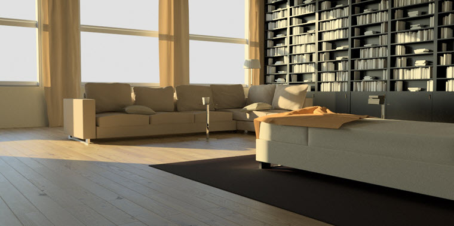
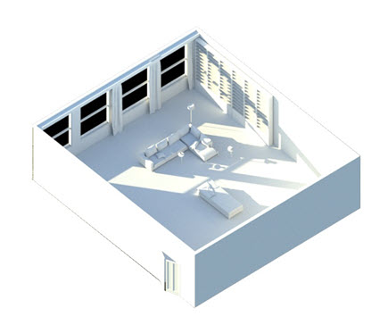
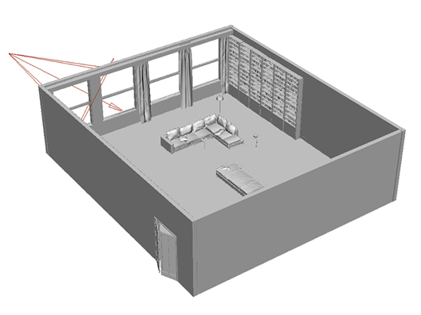
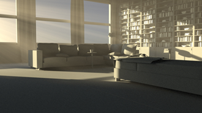
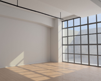

使用物理天空进行照明

借助物理天空，可以非常方便地在场景中获取精确照明。只需调整“仰角”(Elevation)和“方位角”(Azimuth)设置，便可创建有趣的“黄金时刻”照明效果。只需执行以下步骤，便可轻松实现此目的。
不建议对室内场景使用天穹灯光 (skydome_light)。此灯光专为室外场景设计，在背景中表示为球形圆顶。多重重要性灯光采样将在此圆顶的特定方向上跟踪光线。但是，在室内场景中，大多数跟踪光线会照射到物体上，根本就没有从灯光获得任何贡献，反而会产生噪波。在这种情况下，四边形灯光或带方向性的灯光是更好的选择。

场景使用连接到天穹灯光的物理天空节点进行照明
- 首先，创建一个“物理天空”(Physical Sky)着色器。
- 创建一个 SkyDomeLight，并将“物理天空”(Physical Sky)连接到 SkyDomeLight 的 color 属性。
- IPR 渲染场景并调整“仰角”(Elevation)和“方位角”(Azimuth)设置，以便太阳光透过窗户照进来并照射到最右侧的墙壁和地板上。在本例中，“仰角”(Elevation)非常低 (15)，“方位角”(Azimuth)已进行合理设置，角度可让太阳光照射到远处的墙壁上 (143)。
大气体积
天穹灯光不会对任何体积/大气散射效果产生贡献。但是，我们可以通过向场景添加将聚光灯来掩盖这一情况。
- 放置一个聚光灯，以使其光线穿过窗户。旋转聚光灯，以使其匹配物理天空的太阳光角度。注意，现在我们的场景中有两个表示太阳光的灯光。这会产生两种类型的阴影，而我们不希望如此（聚光灯只是用来营造体积散射效果）。如果这种效果很明显，您可以尝试禁用 physical_sky 着色器中的“enable_sun”，并使用聚光灯模拟直射的太阳光。

聚光灯指向窗户
要获得“云隙光”效果，我们可以向聚光灯添加一个 Gobo 过滤器。
- 选择聚光灯并为其连接一个 Gobo 过滤器。
- 选择 Gobo，然后将一个“噪波贴图”(noise map)连接到“滑动贴图”(Slide Map)。
- 启用“大气体积”(Atmosphere Volume)，并将“密度”(Density)增大为 1。
- 最后，将聚光灯的“色温”(Color Temperature)更改为 4500 左右，以便透过窗户得到温暖的太阳光效果。

使用聚光灯照明并在场景中添加大气体积

其他使用连接到天穹灯光的物理天空进行照明的室内场景示例